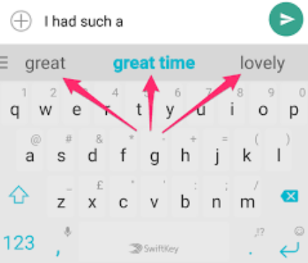
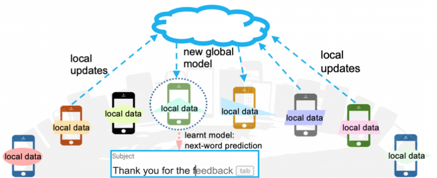
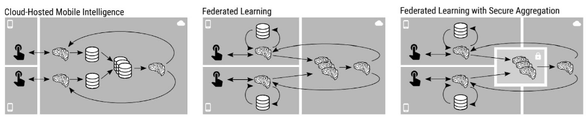
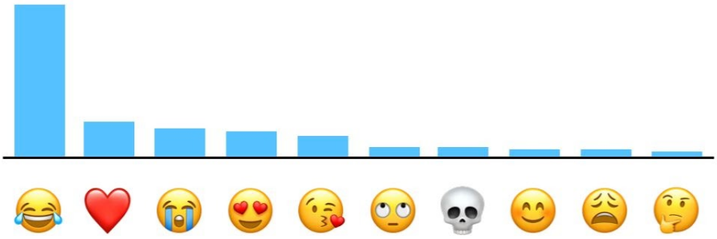

Data privacy and AI
How big tech companies learn from our data while protecting our privacy
 Image Credit: Shuttershock
Image Credit: Shuttershock
We interact with machine learning algorithms every day–from scrolling through social media, to navigating around town, to selecting word recommendations when we text. But what do we know about these machine learning methods? They’re data hungry. More specifically, they’re hungry for OUR data. Many of our interactions with technology must be tracked and stored to develop and improve these algorithms, and this need comes with an inherent privacy risk. By giving up complete access to our sensitive data, we allow ourselves to be vulnerable to both the companies that collect our information and third parties who could be interested in exploiting us. Luckily, there is a set of machine learning and statistical techniques that allow model developers to learn from our data while protecting our privacy first. In this post, we’ll specifically discuss how large companies like Google, Apple, and Microsoft use federated learning and differential privacy to develop the state of art AI algorithms and relevant insights that we benefit from every day.
Federated Learning
The first concept we’ll discuss is called federated learning, and it’s vital for making sure your data stays local to your device.
Now let’s say we wanted to train a next word prediction model to give word recommendations to users as they type. This task involves predicting the next word in a sentence given the previous words, and these predictions can be seen above the keyboard as you type.

Next word predictions are shown above your keyboard as your type. Machine learning models are trained to predict the next word you will type given the previous words in the sentence.
If we had access to all of our users’ mobile devices, we would need to access samples of text messages and collect them in a central server for us to train our model. But wait–text messages contain extremely sensitive data, and this would be an extremely invasive data collection process. Instead of bringing all of the data to a central server with the model, we can use federated learning to learn a global model without a user’s data leaving their device.
In a typical federated learning setting, one central server communicates with several clients (in this case, mobile phones) and trains a global model in several rounds. Each round consists of the following steps:
-
Select a sample of available phones for training and send the current global model to each phone
-
In parallel, train the global model on each phone on their local text messages for one (or a few) epoch(s). Now each phone contains model updates to the global model that were calculated using their own small datasets
-
The model updates from each phone are sent back to the central server and averaged to calculate the gradient update for the global model in this training round.

An illustration of how a central server communicates with client servers in federated learning. Produced by ML@CMU.
For next word prediction, some of the text data from the messages you send everyday are accessed for federated learning. Your phone might be selected for federated learning when it is being charged (to ensure your phone’s performance doesn’t drop) and you have strong wifi bandwidth. Next word prediction is a semi-supervised task (meaning we can automatically construct labels from the raw text data), so there is no additional need for labelling your local data. In a 2018 paper, Google showcased a 1.4 million parameter LSTM model that was trained for 5 days (3000 total rounds!) on over a million users that matched the performance of a centralized server trained model.
Now, let’s examine how Apple uses a similar technique to personalize their news recommendation algorithm. As discussed in a recent paper, they use federated learning to not only learn a global model, but to personalize their models to individual users in a privacy-preserving manner. Apple news is an app that curates personalized news article feeds for users to select and read articles from. These recommendations are based on your interactions with specific articles (e.g what articles you click on, how long you read them, etc.). Article-label pairs can be easily constructed and stored on your device (positive label if read, negative if not read). After learning a global recommendation model, the model can be tested on each client device and remotely fine tuned based on the prediction loss on each user’s specific dataset. The model first takes advantage of the huge knowledge base of users to create a powerful global model, and then can further personalize to each user without ever collecting any data.
An example of how news is broadcasted on the Apple News interface.
Now federated learning itself has some privacy limitations–although Google or Apple might not have access to your specific data, they could theoretically learn about your data from the model updates sent back to the server. For better privacy guarantees, Google implements a method called Secure Aggregation. This method encrypts each individual client model update and sends them to a trusted, third party server for encrypted aggregation–the central server can now only decrypt the aggregated data and has no access to individual model updates.

The left picture represents data being sent to a central server to model training. The middle showcases how models are sent to local devices to be trained, and aggregate together on the central server. The right demonstrates how FL can be better secured by sending encrypted updates to a third party server for aggregation, and the decrypted result is made available to the central server. Figure used from this paper.
Differential Privacy
The next technique that companies use to protect privacy aims to prevent your individual information from leaking through statistical queries, model predictions, and other analyses. This technique is called differential privacy.
The simplest definition of differential privacy from its original authors is: “the data holder makes a promise to the data subject that they will not be affected adversely or otherwise by allowing their data to be used in the study/analysis, no matter what other sources are available”. So if you participate in a dataset, differential privacy gives you some mathematical certainty that any statistical query or model trained on it will not reveal your personal data. From a researcher’s perspective, we want to learn about a dataset without learning about individuals that participate in that dataset. Let’s look at a quick example often used in surveys that collect sensitive information.
Since the 1960s, sociologists have used a technique called randomized response in order to get statistics of a population regarding a sensitive topic while protecting each individual’s privacy. If a researcher wanted to know what percentage of a population has jaywalked, for example, they could give each participant in the study the following procedure:
-
Flip a coin without me seeing it. If it lands on Heads, answer truthfully about whether you’ve jaywalked previously.
-
If it lands on Tails, answer your question according to the next coin flip. “Yes” if Heads, and “No” if tails.
Now, every participant can have plausible deniability if it is discovered they answered yes or no to the question. Furthermore, researchers can still get a rough idea of the true global statistic to the question they asked: if the final amount of “Yes” answers occurs 70% of the time, we know half answered with the probability of the coin flip (50%), and the other half must have answered with the probability of 90%. So in this population, the true statistic must be around 90%. This still may not be exactly accurate due to randomness of the coin flip–there is some tradeoff between privacy and accuracy when applying random noise to each data point.
This procedure above is an example of local differential privacy, where the goal is to add random noise to each individual data point before it is entered into a database. The great thing here is that each individual participant does not need to trust the central data curator–an ideal setting for the relationship between millions of users and big tech companies.
Now, let’s take a look at how Apple uses this technique when collecting statistics on user activity. Apple must collect user data to determine what emojis are most popular among users or what specific online domains drain the most energy on Safari. The first step is encoding their data of interest (in this example, let’s say an emoji you used recently) into a fixed size matrix representation using a hash function. Then, each bit of this matrix representation is changed to an incorrect value with some tunable probability value (anywhere from 1-25%).

An example graph of top emojis of US speakers from Apple’s differential privacy overview. Read more about how Apple obtains this visualization here.
After this noise is added to each individual’s records, IP and other personal identifiers are stripped before the data is sent to the server. The final statistics are then aggregated on Apple’s servers for their internal use–for example, Apple can identify the most popular emojis being used and design better ways of accessing/recommending them. If a user’s specific activity data was leaked from Apple’s central server, each user could have some level of plausible deniability that it wasn’t their correct data.
Local DP is used by Google in order to track changes to user’s Chrome settings and combat malicious software that changes these settings without user permission. Google also employs DP in user facing analysis features like Google Search Trends and Google Maps’ “busyness” feature, which tells you how busy a place may be at any given time. Whether your data is being used by these companies to improve products or collected and aggregated for users to see, differential privacy is a useful technique that prevents malicious actors from personally identifying your data from a dataset.
Other interesting notes
Large tech companies have also built open-source tools that support federated learning and differential privacy, which opens the door for researchers and developers to easily adopt these techniques in their applications. Google has built RAPPOR for differential privacy and TensorFlow Federated for federated learning. Microsoft is using their differential privacy library SmartNoise with nonprofits and health care companies to provide privacy protections to the most sensitive personal data domains.
Concluding remarks
In this post, we learned about the fundamental concepts of federated learning and differential privacy and how Google and Apple access our data while protecting our individual privacy and ownership of that data. The examples discussed are just early use cases of these tools, and future applications are likely to arise. The discussion of data privacy is a very complex one, and these techniques by themselves won’t be the end all solution. At the end of the day, companies control these algorithms and protocols, and can manipulate them however they choose to. But in the world of big data, privacy preserving machine learning techniques can be the technical gateway to allowing users to regain control of their most personal and sensitive data, while maintaining the utility we gain from powerful machine learning models.
What other data hungry applications or research projects do you think could take advantage of these useful techniques?
References
Communication-efficient learning of deep networks from decentralized data
Towards federated learning at scale: system design
The algorithmic foundations of differential privacy